GT Process Documentation: Ephemeral Cycles
Mid-August 2025 – Initial Brainstorming
Started exploring memento mori as the core concept.
First idea: a clock with barrier-grid animation.
Goal: gentle reminder of life’s transience using nature visuals.
Mid-September 2025 – First Advisor Meeting
Discussed initial idea.
Advisor suggested: do more research on “what is time?”
Key questions: What defines time? How can we interpret it in different ways?
End of September 2025 – Research Phase
1. Memento Mori
Origin: Latin phrase “remember you must die”. Used in art to encourage humility and
mindfulness.
2. Perspectives on Time
| Perspective | Core Idea |
|---|---|
| Physical | Measurable, mechanical (clocks, seconds) |
| Cosmological | Vast, cyclical (sun, seasons, stars) |
| Philosophical | Subjective, experiential (memory, presence) |
Early October 2025 – Personal Reflection
As a secondary school student, I felt time accelerate, despite wishing those tough
years would end sooner. By the time I noticed, they were gone.
Recently, my New Year’s resolution to “cherish time”. However, I’ve struggled to define
what this means. Despite my efforts to ‘keep up’ with time by working hard and
accomplishing as much as possible, I still feel I’m not making good use of it. This
realization has sparked an intriguing question: what does it truly mean to cherish time?
Typically, time is perceived as a linear progression linking past, present, and future.
However, I believe it’s possible to perceive time as encompassing only the 'now'—the
only truly 'existing' moment. The past is unchangeable, and the future is uncertain, as
no one knows how long they will live. The present is the only moment we can truly
control. Yu Yan Peng once said, 'If you are depressed, you are living in the past; if
you are anxious, you are living in the future; if you are at peace, you are living in
the present.' Having experienced significant periods of depression and anxiety, I deeply
feel that these emotions have wasted much of my time, pulling me away from the present.
This insight shapes my memento mori artwork, which seeks to anchor viewers in the 'now'
to find peace and mindfulness.
Perhaps the true way to cherish time is to ignore it entirely, focusing solely on the
task at hand and immersing myself in the experience without thoughts of time.
Mid-October 2025 – Project Expansion
Decided to expand beyond one clock into a series:
1. Physical: Animated barrier-grid clock.
2. Cosmological: Sundial with subtle motion.
3. Philosophical: Non-functional “timepiece” that forces presence.
End of October 2025 – Technical Work
Animation Content Plan (Nature + Transience)
| Ring | Frames | Theme |
|---|---|---|
| Outer (Hours) | 24 | Majestic decay (Oak acorn → tree) |
| Middle (Minutes) | 6 | Weekly/monthly (Strawberry → shrivel) |
| Inner (Seconds) | 4 | Daily (Daylily bloom) |
Early November 2025 – Animation Logic
Method: Split 518 frames into 129 groups (4 frames each) to create 129 interlaced
strips.
Arranged side-by-side around a donut-shaped ring in Processing.
Unified Animation Strategy:
| Ring | Rotation Speed | Pace |
|---|---|---|
| Inner | 1 turn / 60 sec | Fast |
| Middle | 1 turn / 60 min | Moderate |
| Outer | 1 turn / 12 hrs | Slow |

Mid-November 2025 – Technical Development
Created a three-ring overlay using Adobe Illustrator with aligned grids.
Goal: Generate matching interlaced donut images that perfectly align.

End of November 2025 – Project Contraction
Decided to abandon the series of three separate artworks in favour of one unified
interactive installation that includes all three aspects of time.
Physical: Central vertical cylinder rotates with barrier-grid animation of plant life
cycle.
Cosmological: Directional light creates shifting shadows from abstract wooden trunks and
branches.
Philosophical: Pulse sensor in wooden “root” adjusts rotation speed to viewer’s
heartbeat.
Overall: Abstract organic form (50 × 50 × 50 cm) with fixed light for changing shadows.

Mid-December 2025 – Möbius Strip Version
Started working on an alternative version using a Möbius strip instead of a cylinder.
The plant life-cycle animation will run along this endless loop: the plant grows on one
half, dies on the other, then flips and starts growing again forever.
It never has a real beginning or end. The heartbeat sensor will still control the
speed: calm pulse = slow rotation, excited pulse = fast rotation. The strong light from
above will cast a single moving shadow that twists and turns with the strip, creating a
second, slower animation on the walls. This version feels more magical and directly
shows the idea of an endless natural cycle.
Decided to try lenticular lens animation (advanced barrier-grid) for multi-angle motion
without extra overlays.
Switched from timelapse to real-time recorded video: will use a camera for live plant
footage or open-source CCTVs (e.g., nature webcams), process frames in real time,
interlace for lenticular, and project onto the Möbius strip.
One important thing I found is that if I print the interlaced image, stack it with the
overlay, and form them into a Möbius strip, then connect one strip to a rotating roller
to play the animation continuously, I realized this is not feasible. The two stacked
strips in a Möbius shape cannot be separated, and it’s impossible to rotate only one,
they become one piece. To solve this, I can first make one Möbius strip, then cut a slit
in the middle, and thread the second strip through it. This way, they can rotate
independently.
My tests show that stacking the interlaced image and overlay into one Möbius loop would
indeed make them inseparable, so relative motion (key for animation) is impossible if
both turn together. But the slit method fixes that perfectly: make one loop first, cut a
small slit (5–10 cm) in the middle of the strip, then thread the second strip through it
before closing both into Möbius shapes. This lets the two loops “interlock” like linked
rings, allowing independent rotation without untwisting.


Early January 2026 – Lighting System
To preserve the poetic purity of the installation while achieving dynamic,
ever-changing shadows that evoke cosmological time, I have finalized the following
approach:
1. Pure permanent magnets only
I will use switchable permanent magnets (also known as on-off magnets or magnetic
switches) as the core mechanism. These require no electricity to generate or maintain
the magnetic field, produce no heat, and make no noise, fully aligning with the desired
“pure permanent magnet, electricity-free” aesthetic for the magnetic interaction itself.
2. Controlled by small servo motors
To introduce gentle, automated movement without compromising the poetic intent, I will
attach servo motors to the rotary handles of the switchable magnets. The servos will
slowly and quietly rotate the handles over extended periods (minutes to tens of minutes
per cycle), cyclically varying the magnetic strength from strong → medium → weak →
medium → strong. Different servos can run at slightly different speeds or phases to
create asynchronous patterns.
3. Small hanging lamps responsive to magnets
Each small wireless LED lamp (battery-powered or rechargeable tea lights/night lights)
will have a small piece of ferromagnetic material (thin steel/iron sheet) or a tiny
neodymium magnet attached to its base. This allows the lamps to be gently attracted,
repelled, raised, lowered, or swayed by the changing magnetic fields below.
4. Dynamic shadow effect
By using multiple switchable magnets controlled by independent servos with varying cycle
times, the multiple hanging lamps will move at different speeds and along slightly
different trajectories, naturally simulating the independent orbits of celestial bodies
(planets, moons, stars). This creates continuously evolving, unpredictable plant-like
shadows on the walls and floor, reinforcing the cosmological perspective of time without
any visible electronics or electrical magnetic components.
This solution maintains the philosophical and aesthetic integrity of using only
permanent magnets for the actual attraction, while introducing just enough subtle
motorized automation (hidden in the base and powered minimally) to bring the shadows to
life in a slow, organic, and celestial manner.
Mid-January 2026 – The latest decisions for the barrier-grid animation on the
Möbius strip installation
Chosen 8 frames for the Möbius strip animation.
Content focus: Möbius loop does visually resemble a connected, twisting galaxy when
viewed from certain angles, especially with its single continuous surface that flows
endlessly into itself without a clear “inside” or “outside.”
Using clips that could represent “time” as the content for the barrier-grid animation
like MTR sunlight flashing, park children running, raindrops racing on glass, sunset
silhouette of buildings.
Unlike personal life photos, cosmic events feel timeless and shared, every viewer has
seen or imagined an eclipse or meteor shower. This makes the piece accessible yet
profound: the heartbeat interaction becomes “my pulse controls the rhythm of the
universe,” which is emotionally powerful and philosophically rich.
Strip size: Inner layer (interlaced image): 0.1 mm PVC backlit film
(matte/semi-translucent), printed at 9 cm high × 140 cm long. Outer layer (barrier-grid
overlay): 0.1–0.25 mm clear acetate (OHP transparency film), printed at 10 cm high × 140
cm long.
Reasons for choosing 8 frames:
Usable length: 1400 mm (assuming a small margin for joining/twist).
With 8 frames:
Band width (one full repeating cycle of 8 frames): 175 mm
(1400 mm ÷ 8 = exactly 175 mm — very nice round number)
Slit width (width of each image strip / transparent slit): 21.875 mm → round to 22 mm
(175 mm ÷ 8 = 21.875 mm — 22 mm is practical, easy to print, and gives a tiny bit of
extra margin for alignment)

End of January 2026 – Adopting a spring-powered mechanism to achieve the
physical aspect of time
I minimize the use of physical computing components as much as possible, aiming to make
the entire installation require little to no electricity and feel more simple and
natural.
I have decided to adopt a spring-powered mechanism (發條) to achieve the physical aspect
of time in the work. This approach is completely electricity-free and fully utilizes
pure mechanical physics — energy is stored by winding the spring and released gradually
to drive movement.
Specifically, I will use the spring mechanism to control the swinging motion of the
small lamp with a magnet attached. A magnetic pendulum will naturally slow down and
eventually stop due to friction and air resistance, causing the lamp to illuminate only
one fixed position over time.
To counter this, the viewer can manually wind the spring, which turns the output shaft
connected to a thin string tied to the lamp. This winding action re-supplies mechanical
energy, restarting and sustaining the lamp's swing along the magnetic trajectory.
In this way, the lamp's movement — and therefore the shifting light and shadows across
the Möbius strip — becomes a direct result of the viewer's physical participation,
symbolizing that time requires human effort and intervention to continue flowing and
evolving.
I tested digital versions on iPad by scaling the interlaced + overlay images to match
the real film frame size (2.4 × 3.7 cm physical on screen), and found that 6 frames with
1 pixel per stripe gave the clearest barrier-grid effect, while 4 frames with 3 pixels
per stripe was second best. This worked well on screen because the display has very high
pixel density, perfect contrast, and no material thickness or light diffusion issues.


However, when I printed on PVC at the same physical frame size (2.4 × 3.7 cm per image), I
found that the barrier-grid effect completely disappeared. The overlay printed very dark,
the transparent slits were almost invisible or too narrow, and even with backlighting the
interlaced image was mostly blocked. This is mainly caused by three physical factors that
screen simulation cannot replicate:
1. Ink opacity and thickness on PVC. Printed black ink on PVC is not perfectly opaque; it
still allows some light bleed, making the "black bars" semi-transparent and reducing
contrast.
2.Material thickness and light scattering. PVC has thickness (even if thin), which causes
parallax error and diffuses light inside the material, blurring the slit edges and weakening
the reveal effect.
3.Slit width too narrow in physical print. 1 pixel or 3 pixels on screen become extremely
fine lines when printed at 2.4 cm width; printer resolution limits (typically 300–600 dpi)
and ink spread make such narrow slits practically invisible or ineffective.
I am going to test the following combinations.
First, I will try 4 frames with 7 pixels per stripe. At 300 dpi, each stripe will have a
physical width of approximately 0.51–0.59 mm. I will use a black bar and a transparent slit
with a 50/50 duty cycle (for example, 0.55 mm black plus 0.55 mm clear per frame). This
setup should produce a visible reveal when the overlay moves slightly relative to the
interlaced layer.
As an alternative for a slightly smoother reveal, I will also test 5 frames with 5 pixels
per stripe. In this case, the stripe width will be approximately 0.42 mm physically. This is
still borderline printable, but it carries a higher risk.

Mid February 2026 – Concept Refinement
Decided to remove the projector and camera from the final setup. The projector was
initially planned to project Processing-generated visual effects showing the shadow to
the position of the audience as captured by the camera.
The change was made to simplify the work, make it more focused on the main content, and
create a stronger sense of unity. The three aspects of perceiving time are now clearly
expressed as:
1. Moving small metal lights = Cosmological perspective
2. People walking to view the barrier-grid animation = Philosophical perspective
3. Music box spring mechanism driven movement and music = Physical perspective
The film element will be presented in four different forms:
1. Unrolled film as a linear timeline
2. Ends-connected film as cyclical time
3. Möbius strip shaped film as unified and eternal time
4. Film in pieces (one photo per piece) to represent fragments of time
These film pieces will be hung or placed next to fixed spotlights on the wall. Viewers
can choose a piece and project it onto a surface, either as a normal photo or as a
barrier-grid animation.
I measured focal lengths, tested stacking, and adapted the box for real-world limited
space.
Summary of my handmade slide projector experiments
Optimal Settings for Limited Distance (Target: 30–40cm Image)
| Configuration | Film-to-lens (u) | Lens-to-wall (v) | Total box-to-wall distance | LExpected image width | Brightness | Clarity |
|---|---|---|---|---|---|---|
| Single lens | 22cm | 31-39cm | 40–50 cm | 30–40 cm | Very good | Good (use 12.5 mm or 9 mm aperture for sharper edges) |
| Stacked lenses (f=9.61 cm) | 13–14 cm | 30–37 cm | 40–50 cm | 30–40 cm | Medium | Good with small aperture |


End of February 2026 – Animation Content Creation
Created several interlaced images for the barrier-grid animation using original videos
I recorded myself. The footage includes scenes I shot specifically for this project as
well as personal videos taken in recent years of my life.
These clips were carefully selected and edited to fit the theme of time, transience,
and everyday moments.
This step ensures all animation content is 100% original, copyright-free, and
personally meaningful.
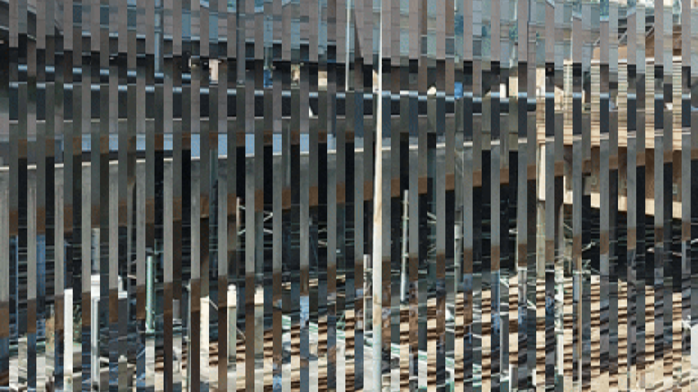
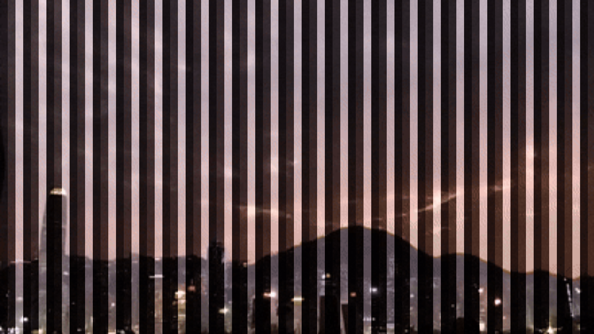
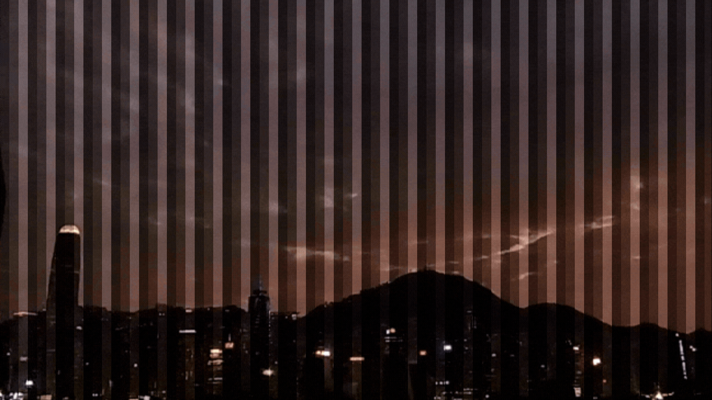

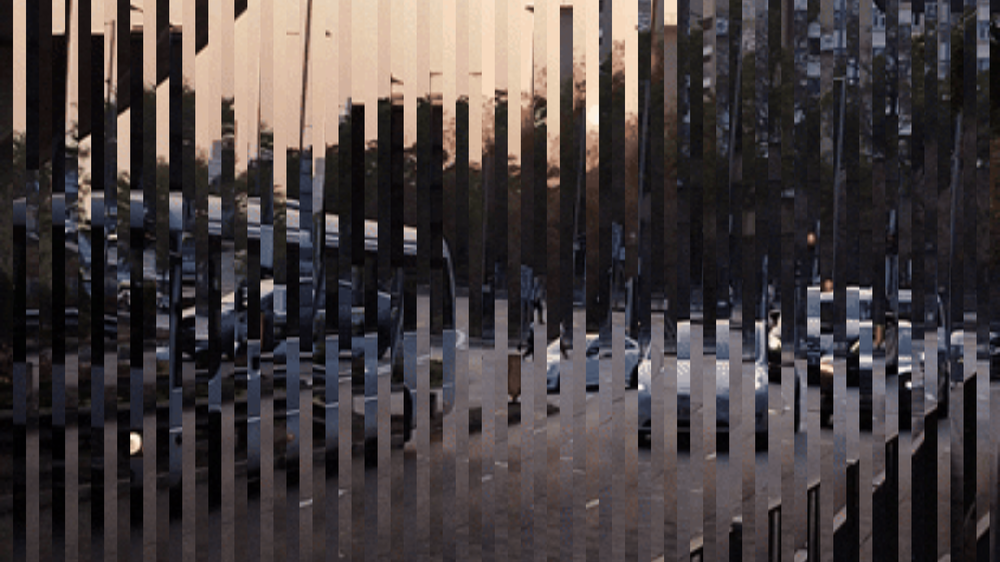
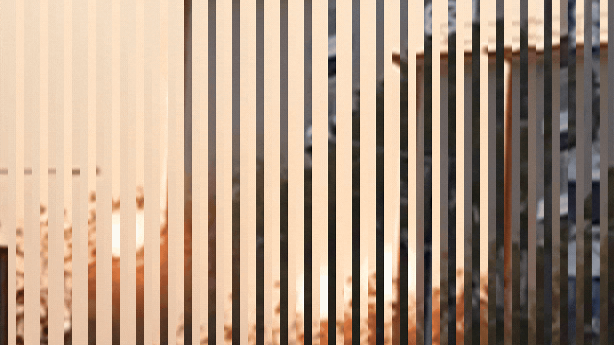
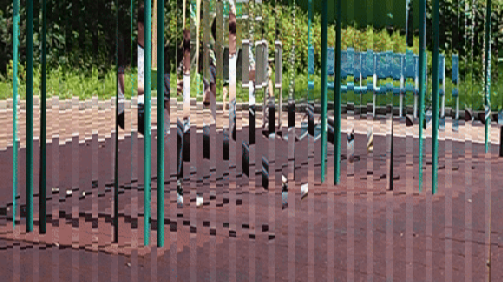
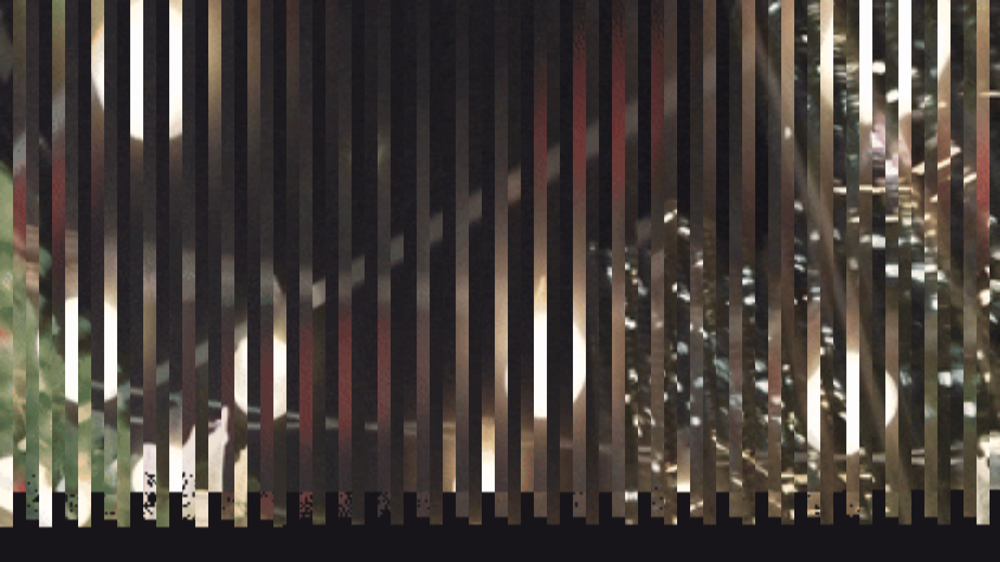
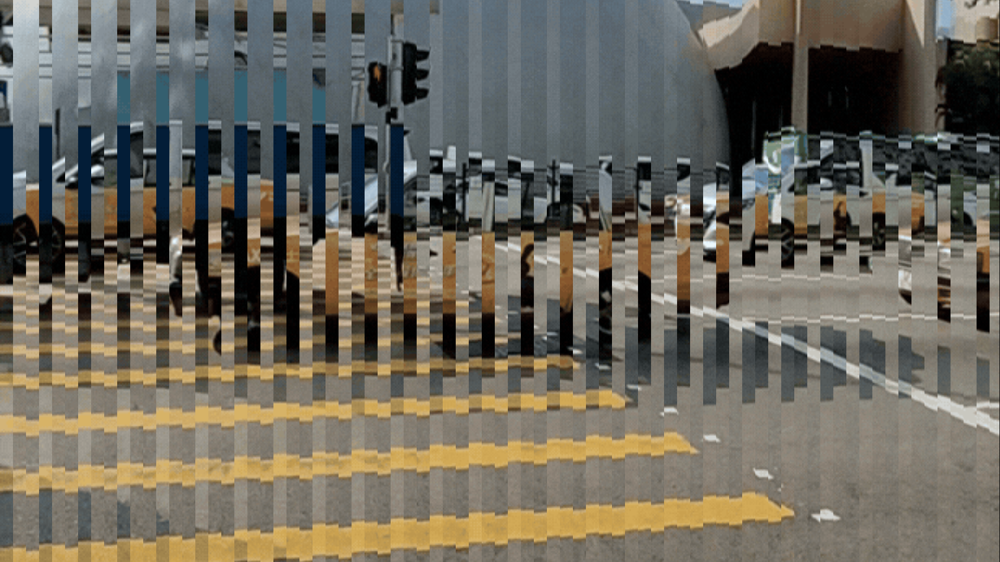

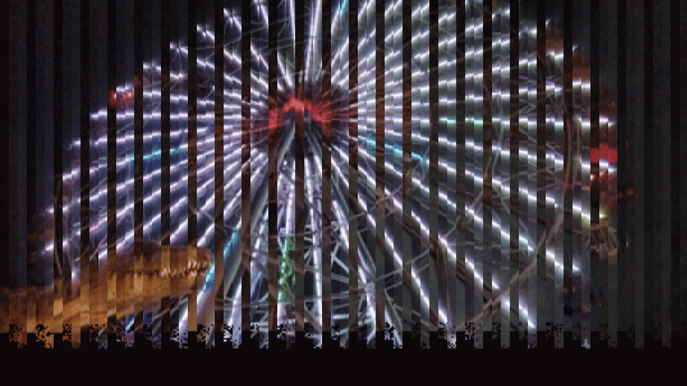
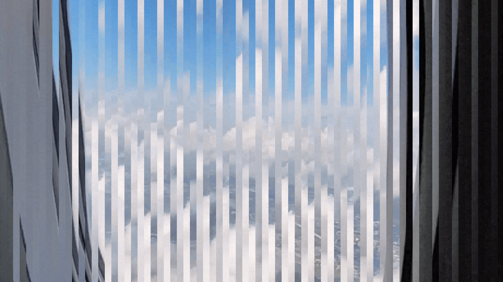
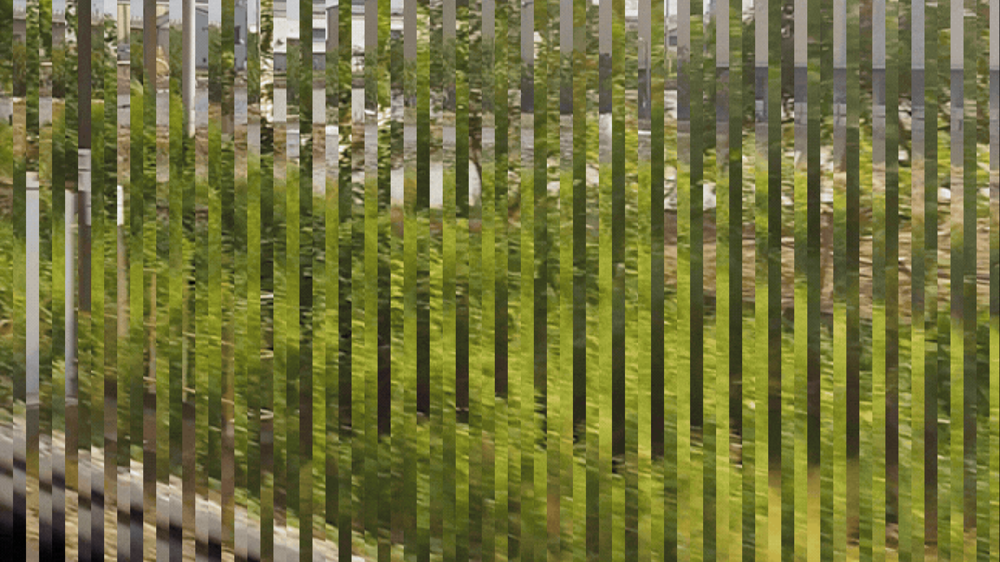
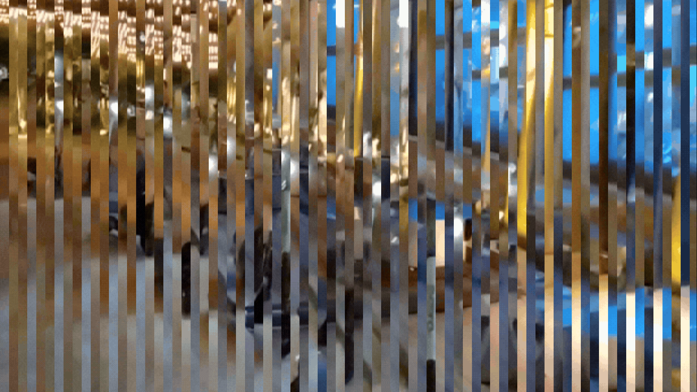
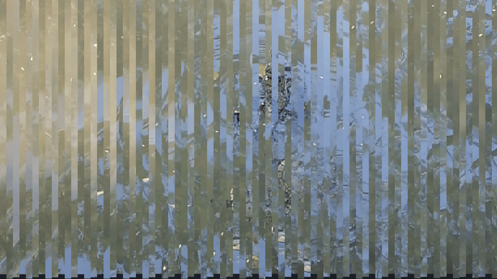
Early March 2026 – Construction Begins
Confirmed the content of the film and ordered a full roll (36 frames): 27 scenic sky
and nature images taken by me, and 9 barrier-grid animation frames.
Received the film and cut it into two parts:
1. The 9-frame section connected end-to-end to form a loop for rotation and animation
playback.
2. The 27-frame section formed into a Möbius strip.
Began physical construction of the installation in early March:
Built the magnetic momentum mechanism.
Drilled holes in the wooden base for the momentum stands, the connected barrier-grid
film loop, and the music box spring mechanism.


End of March 2026 – Final Construction & Testing
Finished building the wooden holder for the installation. The base consists of two 47 ×
47 cm frames connected by four 2 × 4.5 × 100 cm wooden sticks, forming a stable,
open-centered desk structure.


Tested the projection distance by hanging the handmade projector and projecting a dusk
scene film onto the floor beneath the desk.
Also tested the music box spring mechanism by winding it to trigger the central film
ring to spin.
These tests confirmed that both the projection and the mechanical rotation function as
intended.
Early April 2026 – Advisor Feedback & Refinements
Met with advisor to present the latest version of the installation. She gave several
clear suggestions:
1. The magnetic pendulum does not look good in the current
setup and should be removed completely.


Originally, the swinging magnetic lights were the main way to represent the
cosmological perspective: the slow, natural, ever-changing movement of shadows like the
sun and moon.
Removing them means it lose a very poetic, gentle, and mechanical element that ties
the work together nicely. If the pendulum looked messy or not refined enough, it should
be removed.
However, this creates a gap in the cosmological aspect. The three perspectives
(Physical, Cosmological, Philosophical) were one of the strongest conceptual strengths
of this project.
Without the moving lights/shadows, the cosmological layer becomes weaker.Without the
moving lights/shadows, the cosmological layer becomes weaker.
But, there are some possible solutions including using directional light and wooden
branches/trunks more strongly to create natural, moving shadows on the wall/floor, and
let the rotating central film itself cast soft shadows that move slowly.
2. Instead of relying only on the central film ring, place 9
small TVs in a 3×3 grid near the wall. Each TV will play one complete 10-second
animation loop from the 9 barrier-grid films (each film contains 3 frames). This
allows viewers to see the full animation clearly.
It solves the problem of the small 9-frame ring being hard to see. Viewers will clearly
understand the full animation by watching the TVs. It makes the work much clearer and
more accessible, which is good for an exhibition.
However, adding 9 screens risks making the installation feel more “digital” and less
poetic/mechanical. To keep them very small and simple, I would place them neatly on the
wall as a secondary layer, not as the main focus. The central rotating film + music box
should still be the heart of the work.
Here is a brief overview of the main placement options I thought of:
Option 1: TVs on one wall, installation in center (Clear
visibility, but risks splitting experience).
Option 2: TVs surrounding installation (Too many screens
compete with poetic atmosphere).
Option 3: 1 TV looping 9 animations (Simpler, but less
immediate overview).
3. The music box spring mechanism and the way the central film
turns (sometimes fast, sometimes slow) is “raw but fine” and can be kept.
4. Replace the bamboo skewers with a 3D-printed base to hold
the film and overlay more cleanly and professionally.
5. Collect more objects that represent time (such as old movie
tickets, train tickets, expired calendars, etc.) and think about how to present them
meaningfully in the exhibition space.
Final Decision:
Keep main installation as the poetic focal point (Fiction/Emptiness area) and use TVs
as secondary support (Real Lived area).
Place 3×3 TV grid neatly on one wall, dimmed to act as background material.
Use strong spotlights on central installation to keep it the brightest area.
Replace bamboo skewers with a 3D-printed base for cleaner presentation.
Collect physical fragments of time (movie tickets, old calendars) for display.


Early April 2026 – Final Setup Decision & Technical Testing
Conducted a test on playing the 9 barrier-grid animation videos on a traditional TV
with
Professor Lam’s guidance. The test revealed that each TV requires a USB drive, a mini
HDMI
to AV scaler (1080), and a media player, meaning each screen needs three separate power
supplies.
Using 9 TVs would require 27 power plugs, which is impractical for the exhibition
space.
Additionally, the school’s available media players are limited in number, and many are
not
functioning properly (e.g., broken remote controllers).
Due to these technical and logistical constraints, it was decided to use only one TV
during
the exhibition. The TV will serve as secondary support material in the “Real Lived
area,”
looping all 9 animations in sequence. The installation will maintain two distinct areas:
The central poetic area (Fiction/Emptiness) features the rotating barrier-grid film
ring,
music box mechanism, and directional light with shadows.
The “Real Lived area” on the side, where the single TV will display the complete 9
animations as supporting material.

Also completed printing the 3D base model to replace the previous bamboo skewers for
holding the film and overlay more cleanly and professionally.